3 Mecanismos de Formación
4 Redes aleatorias
4.1 Definición
- Nomenclatura:
Redes aleatorias == Erdös–Rényi model == Gilbert model
- Definiciones:
- \(G(N, L)\) Model — \(N\) nodos y \(L\) enlaces, ala Erdös–Rényi
- \(G(N, p)\) Model — \(N\) nodos y \(p\) probabilidad de enlace, ala Gilbert (el que usaremos)
- Definición:
A random network consists of \(N\) nodes where each node pair is connected with probability \(p\).
- Comienza con \(N\) nodos aislados.
- Selecciona un par de nodos y genera un número aleatorio entre \(0\) y \(1\). Si el número excede \(p\), conecta el par de nodos seleccionado con un enlace; de lo contrario, déjalos desconectados.
- Repite el paso (2) para cada uno de los \(N(N-1)/2\) pares de nodos.
- Erdös papers:
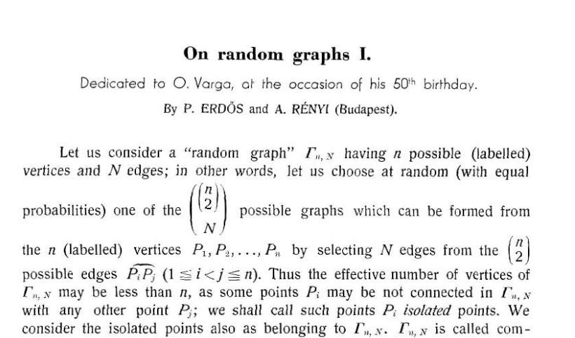
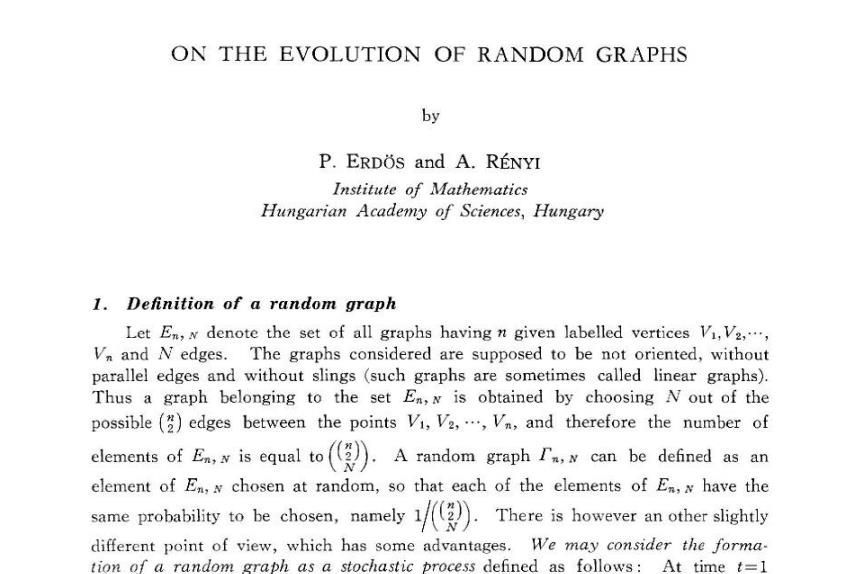
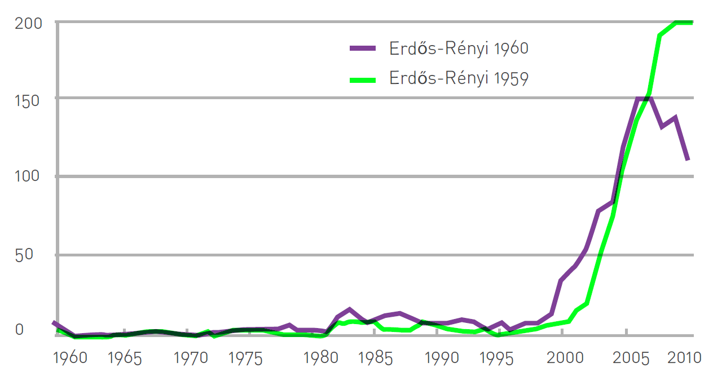
4.2 Número de enlaces
- Si una red tienen \(N\) nodos, entonces existen \(N(N-1)/2\) pares de nodos.
- Probabilidad que obtener \(x\) sellos al tirar \(N\) veces una moneda:
\[ p_x = \underbrace{\binom{N}{x}}_{\substack{\text{Número de maneras} \\ \text{distintas de tener } x \text{ éxitos} \\ \text{en } N \text{ lanzamientos}}} \;\underbrace{p^{x}}_{\substack{\text{Probabilidad que } x \\ \text{lanzamientos hayan} \\ \text{sido sello}}} \;\underbrace{(1-p)^{N-x}}_{\substack{\text{Probabilidad que } N \\ \text{lanzamientos hayan} \\ \text{sido cara}}} \]
- Probabilidad que una realización tenga exactamente \(L\) enlaces:
\[ p_L = \underbrace{\binom{\frac{N(N-1)}{2}}{L}}_{\substack{\text{Número de formas de} \\ \text{colocar } L \text{ enlaces} \\ \text{entre } N(N-1)/2 \text{ pares}}} \;\underbrace{p^{L}}_{\substack{\text{Probabilidad que } L \\ \text{intentos hayan} \\ \text{resultado en enlaces}}} \;\underbrace{(1-p)^{\frac{N(N-1)}{2}-L}}_{\substack{\text{Probabilidad que los} \\ \text{restantes } N(N-1)/2 - L \\ \text{pares no hayan} \\ \text{terminado con enlace}}} \]
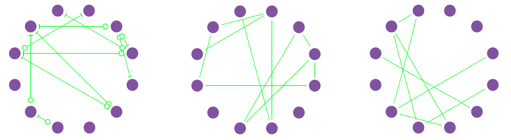
4.3 Grado medio
- Por lo que el número de enlaces esperados en red aleatoria:
\[ \langle L \rangle = \sum_{L=0}^{N} L\, p_L = p\,\frac{N(N-1)}{2} \]
- Y el grado medio en red aleatoria:
\[ \langle k \rangle = \frac{2\langle L \rangle}{N} = p(N-1) \]
Que es equivalente al número de enlaces esperado para 1 solo nodo.
4.4 Distribución de grado
- En una red aleatoria, la probabilidad que un nodo \(i\) tenga exactamente \(k\) vecinos:
\[ p_k = \underbrace{\binom{N-1}{k}}_{\substack{\text{Número de formas de} \\ \text{tener } k \text{ enlaces entre} \\ N-1 \text{ nodos}}} \;\underbrace{p^{k}}_{\substack{\text{Probabilidad de tener} \\ k \text{ enlaces presentes} \\ \text{en esa realización}}} \;\underbrace{(1-p)^{N-1-k}}_{\substack{\text{Probabilidad que los} \\ \text{restantes } N-1-k \text{ nodos no} \\ \text{presenten enlace}}} \]
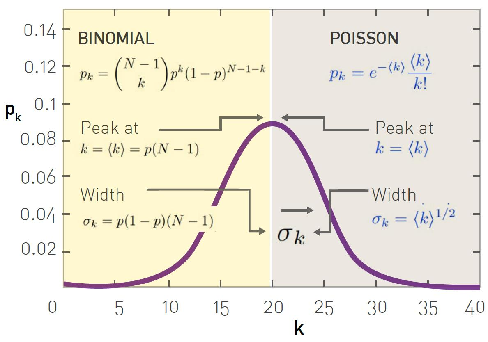
- Ahora bien, la mayoría de las redes son dispersas: \(\langle k \rangle \ll N\)
\[ p_k = \binom{N-1}{k} p^{k} (1-p)^{N-1-k} \quad\longrightarrow\quad p_k = e^{-\langle k \rangle}\,\frac{\langle k \rangle^{k}}{k!} \]
- No depende de \(N\), por lo que es agnóstica del tamaño.
- Depende de un solo parámetro, \(\langle k \rangle\).
- Las redes sociales reales no son aleatorias.
\[ \langle k \rangle \approx 1{,}000 \;\rightarrow\; \sigma_k = 31.62 \]
- O sea que las personas tienen entre 968 y 1032 conocidos, pero está documentado que Franklin Delano Roosevelt (US President) tenía ~22000 conocidos.
- De hecho, no solo las redes sociales no son aleatorias:
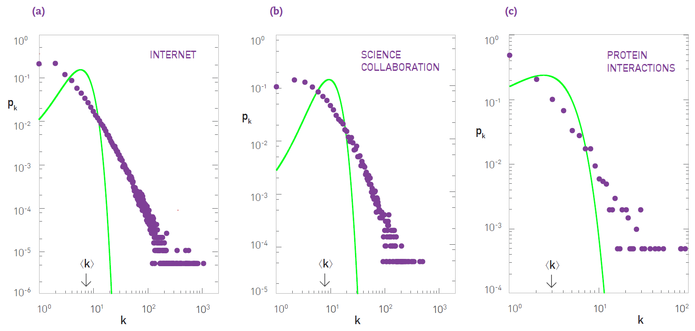
4.5 Coeficiente de clusterización
- Recordemos que la clusterización local se definía como:
\[ C_i = \frac{(\text{number of pairs of neighbors of } i \text{ that are connected})}{(\text{number of pairs of neighbors of } i)}. \]
- Ahora, notemos que
\[ \langle L_i \rangle \;\rightarrow\; \substack{\text{Número esperado de} \\ \text{links entre los } k \\ \text{vecinos de un nodo } i} \qquad\qquad \frac{1}{2}k_i(k_i - 1) \;\rightarrow\; \substack{\text{Número de posibles} \\ \text{links entre los } k \\ \text{vecinos del nodo } i} \]
- Pero en una aleatoria simplemente se creará una fracción de los posibles
\[ \langle L_i \rangle = p\,\frac{k_i(k_i-1)}{2} \]
- Entonces
\[ C_i = \frac{\langle L_i \rangle}{\frac{1}{2}k_i(k_i-1)} = p = \frac{\langle k \rangle}{N}. \]
- Notemos que:
- Para redes aleatorias, la clusterización global debe ser igual a la local.
- Si las redes fueras aleatorias, la clusterización debería decrecer según \(1/N\).
- La clusterización no depende de \(k\), sino que del término global \(\langle k \rangle\).
- Comparemos con redes reales:
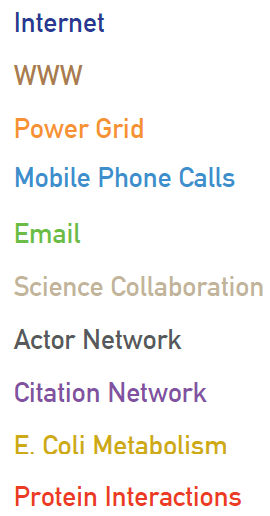
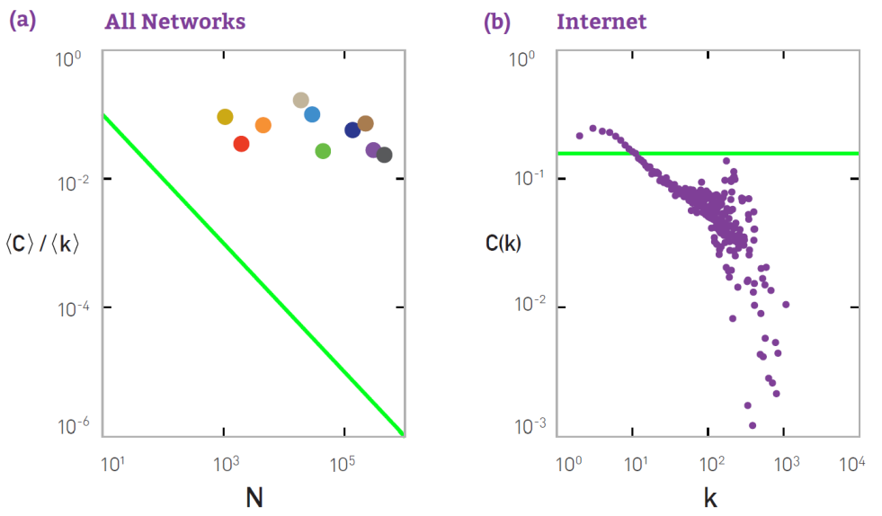
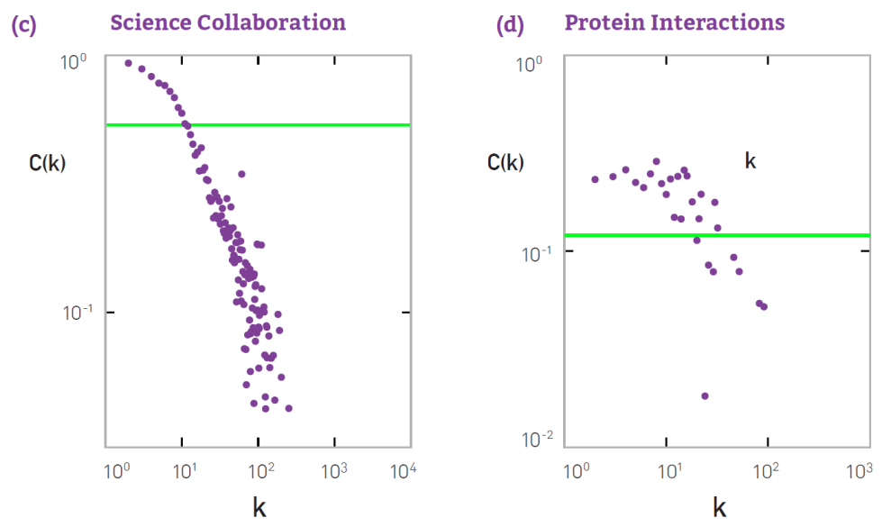
4.6 Componente principal
- En 1959, Erdös descubrió que la emergencia de una componente principal no es suave.
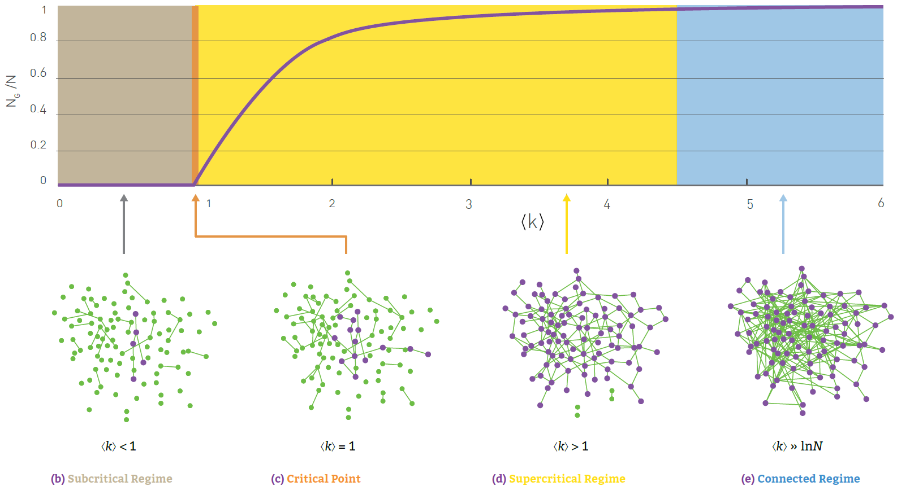
- Cuando \(\langle k \rangle > 1\) se reconoce una red.
- Cuando \(\langle k \rangle \gg \ln N\), se espera solo 1 componente.
| NETWORK | \(N\) | \(L\) | \(\langle k \rangle\) | \(\ln N\) |
|---|---|---|---|---|
| Internet | 192,244 | 609,066 | 6.34 | 12.17 |
| Power Grid | 4,941 | 6,594 | 2.67 | 8.51 |
| Science Collaboration | 23,133 | 94,439 | 8.08 | 10.05 |
| Actor Network | 702,388 | 29,397,908 | 83.71 | 13.46 |
| Protein Interactions | 2,018 | 2,930 | 2.90 | 7.61 |
5 Redes de Mundo Pequeño
5.1 Propiedad de mundo pequeño
- Milgram: Seis grados de separación -> longitud de camino corta -> ¿comparado con qué?
- En una red aleatoria, ¿cuántas personas están a una distancia \(d\)?
- \(\langle k \rangle\) nodos a distancia uno (\(d = 1\)).
- \(\langle k \rangle^2\) nodos a distancia dos (\(d = 2\)).
- \(\langle k \rangle^3\) nodos a distancia tres (\(d = 3\))…
- … \(\langle k \rangle^d\) nodos a distancia \(d\).
- Por lo tanto, el número total de nodos que están como máximo a distancia \(d\)
\[ N(d) \approx 1 + \langle k \rangle + \langle k \rangle^2 + \ldots + \langle k \rangle^d = \frac{\langle k \rangle^{d+1} - 1}{\langle k \rangle - 1} \]
\[ \rightarrow \langle k \rangle^{d_{\max}} \approx N. \qquad\qquad \rightarrow d_{\max} \approx \frac{\ln N}{\ln \langle k \rangle} \quad \text{(diámetro de red aleatoria)} \]
\(\langle d \rangle \sim \ln N\) — propiedad mundo pequeño
- Comparemos el diámetro esperado en redes aleatorias vs redes regulares
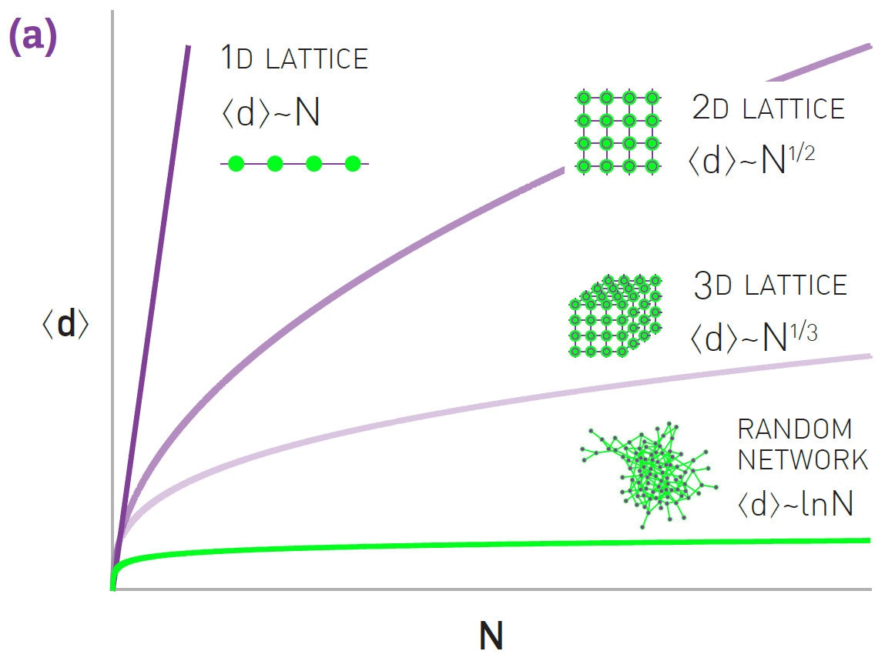
- En general, para una red regular \(d\)-dimensional
\[ \langle d \rangle \sim N^{1/d} \]
5.2 Modelo Watts-Strogatz
- Animados por:
- Coeficiente de clusterización alto para redes reales según varía \(N\).
- Diámetro con crecimiento logarítmico con respecto a \(N\).
- Notaron que:
- Redes regulares: alta clusterización, baja propiedad mundo pequeño
- Redes aleatorias: baja clusterización, alta propiedad mundo pequeño
- Sin embargo adolece de:
- Distribución de grado Poisson similar a red aleatoria → no hubs
- Clusterización similar a red regular → no dependencia en \(k\).
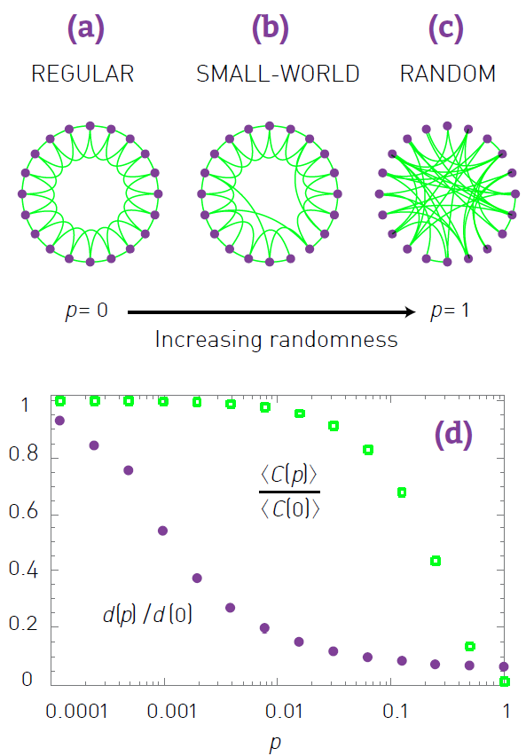
6 Redes Libres de Escala
6.1 Propiedad libre de escala
- Al ver la distribución de grado de la red WWW en un plot log-log, vemos que quedaría bien descrita por
\[ \log p_k \sim -\gamma \log k \quad\longrightarrow\quad p_k \sim k^{-\gamma} \]
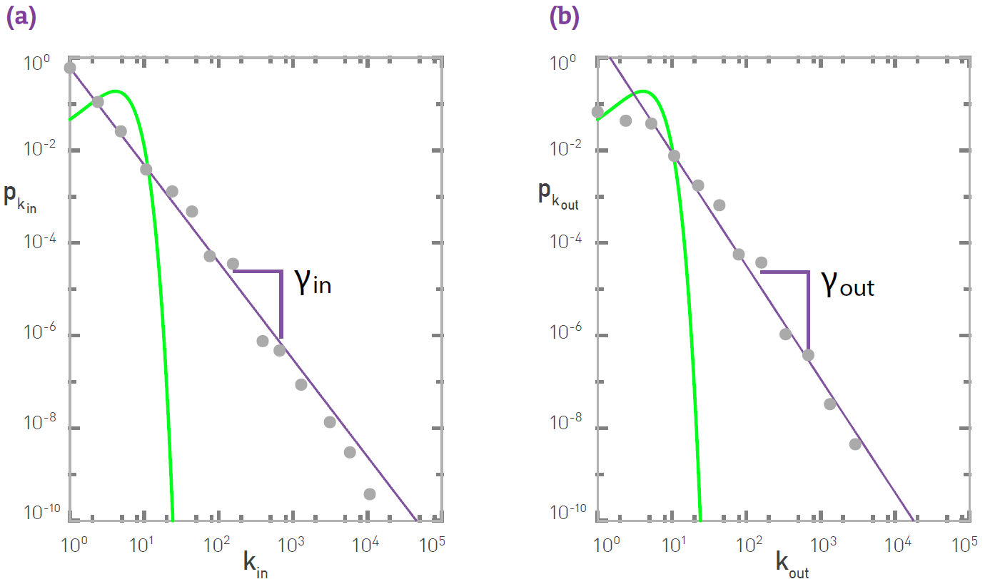
- La red aleatoria
- Sub-estima la cantidad de nodos con low-degree.
- Sobre-estima la cantidad de nodos con \(k \sim \langle k \rangle\).
- Sub-estima el número de nodos con high-degree (hubs).
- El hecho que la recta no dependa del \(N\) de la red, hace que se llame libre de escala.
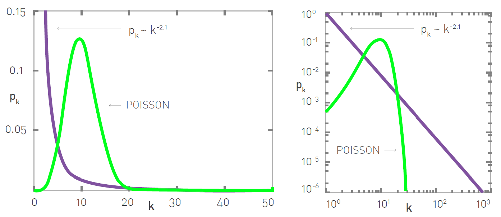
6.2 Significado de libre de escala
- Para una red con distribución power-law, su \(n\)-ésimo momento:
\[ \langle k^n \rangle = \int_{k_{\min}}^{k_{\max}} k^n p(k)\,dk = C\,\frac{k_{\max}^{\,n-\gamma+1} - k_{\min}^{\,n-\gamma+1}}{n-\gamma+1} \]
- Queremos ver el comportamiento para \(k_{\max} \to \infty\)
- Todos los momentos con \(n < \gamma - 1\) son finitos.
- Todos los momentos con \(n > \gamma - 1\) son infinitos.
- La desviación estándar corresponde al momento \(n = 2\).
- Típicamente, estas redes tienen \(2 < \gamma < 3\).
- Por lo tanto, el grado de un nodo seleccionado aleatoriamente
\[ k = \langle k \rangle \pm \sigma_k \in [\,{}^{-}\infty, {}^{+}\infty\,] \]
\[ \langle x \rangle = \sum_{x=0}^{N} x\,p_x \]
\[ \langle x^2 \rangle = \sum_{x=0}^{N} x^2\,p_x \]
\[ \sigma_x = \sqrt{\langle x^2 \rangle - \langle x \rangle^2} \]
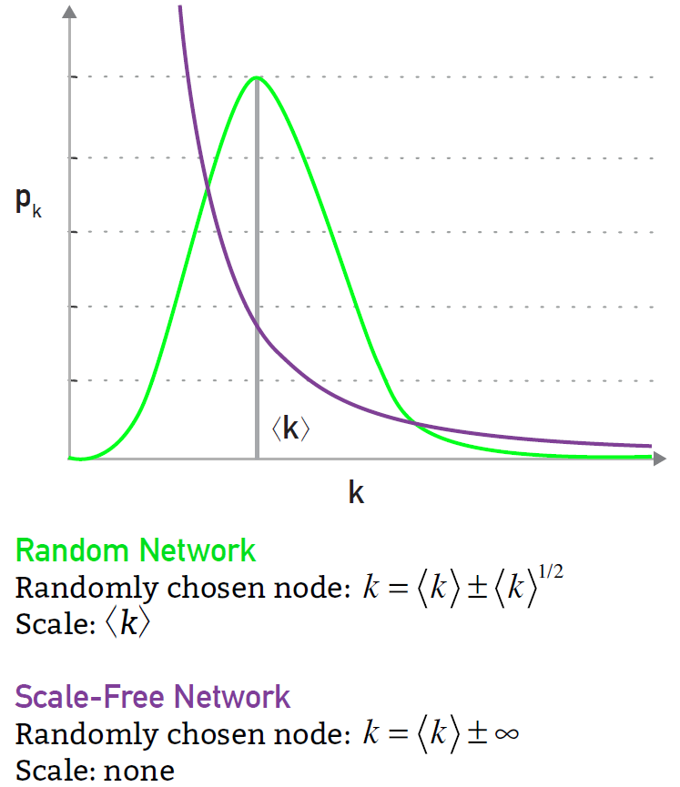
6.3 Modelo Albert-Barábasi
- Nomenclatura:
Modelo Albert-Barábasi == Modelo BA == Modelo scale-free
- Es un mecanismo de formación que sigue un preferential-attachment. Antigua idea del fenómeno rich-gets-richer.
- Modelo:
- Comenzamos con \(q\) nodos y \(q\) enlaces.
- En cada paso un nuevo nodo se conecta a otros \(m\) nodos ya existentes, siguiendo preferential-attachment:
\[ \Pi(k_i) = \frac{k_i}{\sum_j k_j} \]
- Después de \(t\) pasos, tenemos un total de nodos \(N = q + t\), y un total de enlaces \(q + mt\).
6.3.1 Crecimiento de una red Barabási–Albert
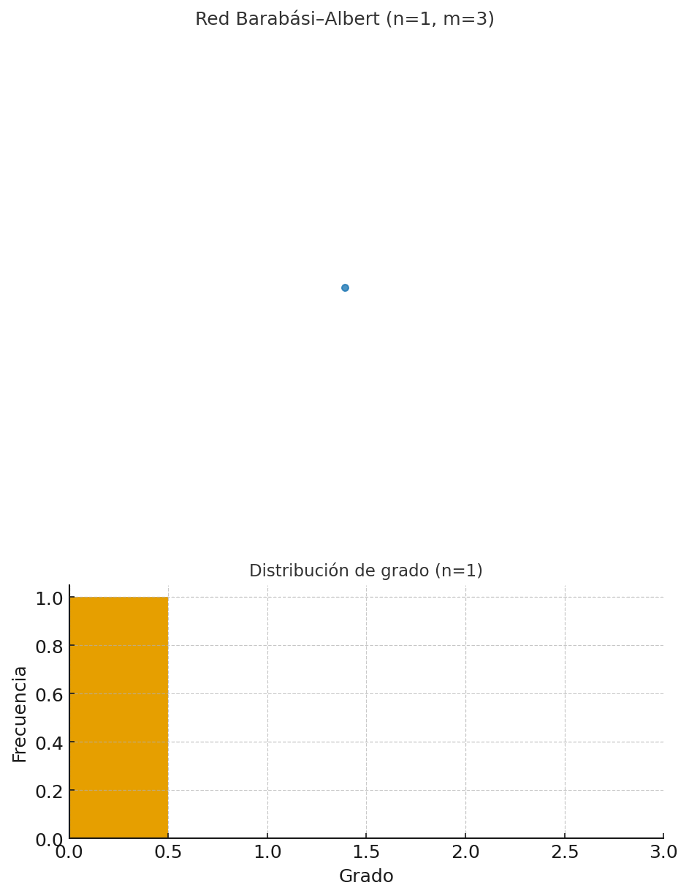